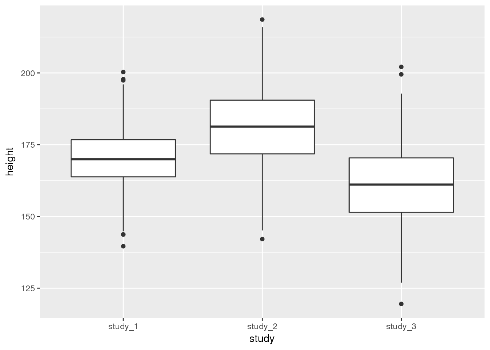
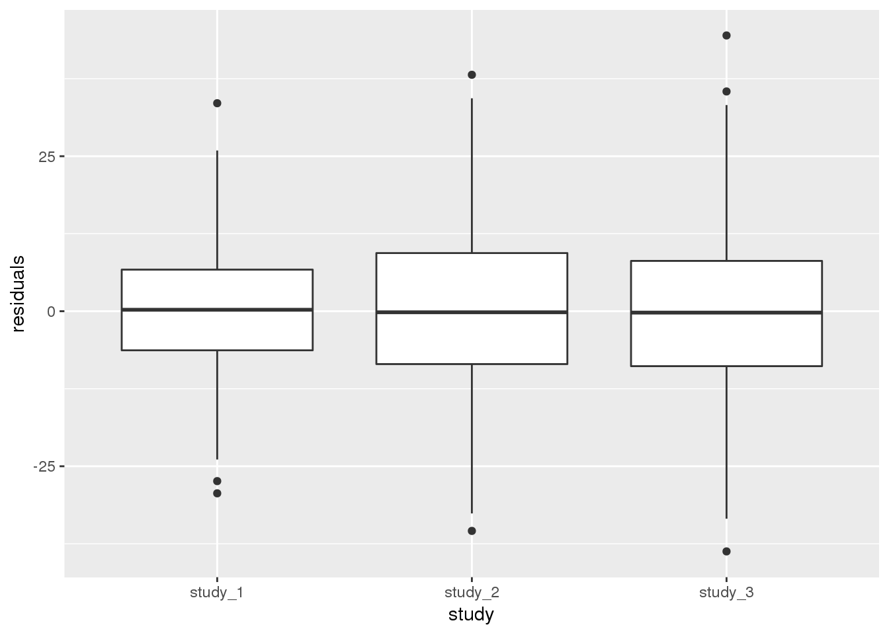

5 Phenotype Harmonization
Because TOPMed comprises multiple, distinct studies, it is necessary to perform phenotype harmonization before running a cross-study analysis. Harmonization is generally performed by “harmonization unit”, which is defined as a group of subjects whose phenotypes can be similarly processed. In many cases, one study corresponds to one harmonization unit, but more complicated studies may require multiple harmonization units. For example, the Framingham Heart study has multiple subcohorts (Original, Offspring, etc.), with phenotypes measured differently for subjects in different cohorts. Since the phenotypes have been measured differently, the different subcohorts have to be harmonized separately.
In this exercise, we assume that you have created a phenotype harmonization plan for height, sent it to members from three studies to perform the harmonization, and received a harmonized phenotype file from each study. We will generate some diagnostic information about the harmonized phenotype.
The exercise uses 1000 Genomes data, with simulated phenotypes for study, age, and height.
5.1 Import phentoype files into R
The first step is to read the files into R for processing. Before we begin, you need to download the data from github so you have access to it.
repo_path <- "https://github.com/UW-GAC/topmed_workshop_2017/raw/master"
pheno_files <- c("pheno_data_study_1.txt", "pheno_data_study_2.txt", "pheno_data_study_3.txt")
for (pheno_file in pheno_files) {
if (!file.exists(pheno_file)) download.file(file.path(repo_path, pheno_file), pheno_file)
}Next, read the study phenotype files into R. In this case, each file is tab-delimited and has the same phenotype variable names.
study_1 <- read.table("pheno_data_study_1.txt", header = TRUE, sep = "\t", as.is = TRUE)
head(study_1)## subject_id sex age height
## 1 HG00096 M 47 165.3
## 2 HG00102 F 49 169.1
## 3 HG00112 M 46 167.9
## 4 HG00114 M 49 169.5
## 5 HG00115 M 35 161.1
## 6 HG00116 M 37 182.2study_2 <- read.table("pheno_data_study_2.txt", header = TRUE, sep = "\t", as.is = TRUE)
head(study_2)## subject_id sex age height
## 1 HG00099 F 40 185.5
## 2 HG00103 M 50 190.8
## 3 HG00106 F 51 165.5
## 4 HG00107 M 39 195.8
## 5 HG00109 M 48 181.5
## 6 HG00111 F 42 194.9study_3 <- read.table("pheno_data_study_3.txt", header = TRUE, sep = "\t", as.is = TRUE)
head(study_3)## subject_id sex age height
## 1 HG00097 F 47 144.9
## 2 HG00100 F 45 150.5
## 3 HG00101 M 40 177.9
## 4 HG00105 M 34 158.5
## 5 HG00108 M 47 168.5
## 6 HG00110 F 44 159.3We will be looking at differences by harmonization unit (in this case, study), so add the study identifier to the data frame.
study_1$study <- "study_1"
study_2$study <- "study_2"
study_3$study <- "study_3"Combine the three different study data frames into one large data frame for joint analysis. Before doing this, we should check that the column headers are the same.
all.equal(names(study_1), names(study_2))## [1] TRUEall.equal(names(study_1), names(study_3))## [1] TRUElibrary(dplyr)
phen <- dplyr::bind_rows(study_1, study_2, study_3)5.2 Run some quick diagnostics on the files
We can look at the distribution of phenotype data with text-based reports or with plots.
First, inspect distributions with table for categorical traits and with summary for quantitative traits. The commads are shown here for study_1, but you should run them for study_2 and study_3 as well to see if you can see any differences.
table(study_1$sex)##
## F M
## 190 185summary(study_1$age)## Min. 1st Qu. Median Mean 3rd Qu. Max.
## 32.00 41.00 45.00 45.17 49.00 62.00summary(study_1$height)## Min. 1st Qu. Median Mean 3rd Qu. Max.
## 139.6 163.8 169.9 170.2 176.7 200.3It is also helpful to use plots to inspect the distributions of phenotype data. Here, we will look at boxplots of height by study.
library(ggplot2)
ggplot(phen, aes(x = study, y = height)) + geom_boxplot()
You may also want to see the difference in height when you include both study and sex:
ggplot(phen, aes(x = study, fill = sex, y = height)) + geom_boxplot()
These diagnostics are helpful to get a feel for the data. They can help you see if one study is vastly different from the others or detect outlier values. Some of the differences could be accounted for by covariates, so we will assess the statistical significance of study differences in the next section.
5.3 Use using mixed models to compare studies
The quick diagnostics in the previous section let you see if the data from one study are completely different from the others, but such differences could be due to other factors that could be adjusted for in analysis. To account for these other factors, we need to fit a statistical model to the data. Because some of the studies in TOPMed have related individuals, we need to fit a mixed model to account for the correlation in the data. In this case, because the phenotype is quantitative, we will use a linear mixed model. More information about mixed models will be given during presentations tomorrow.
We use the GENESIS R package for fitting the mixed model. This package can accept a correlation matrix as a random effect in the mixed model, instead of requiring a categorical or indicator variable. It therefore can account for the observed genetic relatedness between subjects. It is also the same package that we use for the association analyses, so this exercise provides a brief introduction to the package and some of the associated data structures.
5.3.1 Create an Annotated Data Frame
The first step in fitting the mixed model is to create an Annotated Data Frame. This data structure is provided by the Bioconductor Biobase package, and it contains both the data and metadata.
Next, create the Annotated Data Frame. You should include a description of each variable in the metadata.
library(Biobase)
metadata <- data.frame(labelDescription = c(
"subject identifier",
"subject's sex",
"age at measurement of height",
"subject's height in cm",
"study identifier"
))
annot <- AnnotatedDataFrame(phen, metadata)
# access the data with the pData() function
head(pData(annot))## subject_id sex age height study
## 1 HG00096 M 47 165.3 study_1
## 2 HG00102 F 49 169.1 study_1
## 3 HG00112 M 46 167.9 study_1
## 4 HG00114 M 49 169.5 study_1
## 5 HG00115 M 35 161.1 study_1
## 6 HG00116 M 37 182.2 study_1# access the metadata with the varMetadata() function
varMetadata(annot)## labelDescription
## subject_id subject identifier
## sex subject's sex
## age age at measurement of height
## height subject's height in cm
## study study identifierSave the AnnotatedDataFrame for future use.
save(annot, file = "phenotype_annotation.RData")5.3.3 Fit a mixed model without harmonization unit
We will first fit a mixed model that allows us to see if the mean of the height phenotype is different by study after adjusting for other covariates. In this case, we will adjust for age and sex, but not for harmonization unit (study), because we are interested in seeing differences in mean height by harmonization unit. We will also include the genetic relatedness matrix as a random effect to account for relatedness between the participants.
outcome <- "height"
covars <- c("sex", "age")
covariance_matrices <- grm$grm
library(GENESIS)
mod_1 <- GENESIS::fitNullMM(annot, outcome = outcome, covars = covars,
covMatList = covariance_matrices)## [1] 107.6520433 107.6520433 -4584.2852579 0.9797695
## [1] 104.9578627 108.1741689 -4584.0158948 0.9879743
## [1] 54.201361 145.872003 -4580.515278 1.014609
## [1] 59.006946 144.320038 -4580.480094 1.000327
## [1] 59.10002 144.30106 -4580.48008 1.00000
## [1] 59.09859 144.30237 -4580.48008 1.00000
## [1] 59.09862 144.30235 -4580.48008 1.00000The output of fitNullMM is a list with a number of named elements
names(mod_1)## [1] "varComp" "varCompCov" "fixef"
## [4] "betaCov" "fitted.values" "resid.marginal"
## [7] "eta" "resid.conditional" "logLikR"
## [10] "logLik" "AIC" "RSS"
## [13] "workingY" "outcome" "model.matrix"
## [16] "cholSigmaInv" "scanID" "family"
## [19] "converged" "zeroFLAG" "hetResid"
## [22] "call"The elements that we will work with in this exercise are:
converged: an indicator of whether the model successfully convergedmodel.matrix: The matrix of subject-covariate values used to fit the modelfixef: The fitted fixed effectsbetaCov: The covariance of the fitted fixed effectsresid.marginal: The (marginal) residuals from the model, which have been adjusted for the fixed effects but not for the covariance structurevarComp: The fitted variance component for each input covariance matrix
Make sure the model converged.
mod_1$converged## [1] TRUENow, add the residuals to the phenotype data frame for plotting. We need to make sure that we are matching each residual value to the correct subject. In this case, we already ordered the AnnotatedDataFrame to match the genetic relatedness marix, but this may not always be the case (for example, if subjects are excluded due to missing phentoype data). To do match the same subject’s values together, we use the row names of the model.matrix element of the output, which are in the same order as the residual matrix, and the subject_id column of the annotated data frame. We then match the row names (and therefore the residuals) to the subject identifier in the phenotype file using the base R function match.
j <- match(annot$subject_id, rownames(mod_1$model.matrix))
annot$residuals <- mod_1$resid.marginal[j]Next, we want to check if the different studies have the same mean height after adjustment for other covariates (here, age and sex). We will first do this qualitatively by making a boxplot of the residuals by study.
ggplot(pData(annot), aes(x = study, y = residuals)) + geom_boxplot()
From the boxplot, it is clear that the different studies have different mean heights.
5.3.4 Fit a model with harmonization unit
Next, we can look at a model that adjusts for other covariates as well as harmonization unit. This model allows us to run a statistical test on the fitted study means and to qualitatively check if the variances are the same after adjusting for mean effects. The outcome is the same, but we now add the harmonization unit as a covariate. We also allow for group-specific residual variance by harmonization unit using the group.var argument to fitNullMM.
# include the harmonization unit in the covariates
covars <- c("age", "sex", "study")
mod_2 <- GENESIS::fitNullMM(annot, outcome = outcome, covars = covars,
group.var = "study", covMatList = covariance_matrices)The fixef element now includes effects for study:
mod_2$fixef## Est SE Stat pval
## (Intercept) 164.27749628 3.04751310 2905.7951013 0.000000e+00
## age 0.06043261 0.06642232 0.8277795 3.629154e-01
## sexM 6.43122130 0.65686268 95.8600682 1.232974e-22
## studystudy_2 10.59017952 0.78904317 180.1379060 4.521785e-41
## studystudy_3 -8.94559707 0.82086206 118.7622189 1.180674e-27First we’ll run a Wald test on the study effects to see how significant the mean difference is. The null hypothesis of this test is that all of the studies have the same mean height.
First, identify the fixed effects and their covariance for the study indicator variables. There are only two studies in the fixed effects element because the other study is used as a reference group.
# these rows are associated with the study effects
idx <- 4:5
# fixed effect estimates for the studies
study_effect <- mod_2$fixef[idx, ]
study_effect## Est SE Stat pval
## studystudy_2 10.590180 0.7890432 180.1379 4.521785e-41
## studystudy_3 -8.945597 0.8208621 118.7622 1.180674e-27# covariance of the study effects
study_cov <- mod_2$betaCov[idx, idx]
study_cov## studystudy_2 studystudy_3
## studystudy_2 0.6225891 0.2308666
## studystudy_3 0.2308666 0.6738145Next, calculate the Wald test statistic and associated p-value.
test_stat <- t(study_effect$Est) %*% solve(study_cov) %*% study_effect$Est
pval <- pchisq(test_stat, df = length(study_effect), lower.tail = FALSE)
pval## [,1]
## [1,] 1.191252e-98The small p-value indicates that the null hypothesis is rejected; the height measurements from the studies do not have the same mean height even after adjusting for the other covariates. Even if this test were not significant, though, the studies’ mean heights could still be different enough to indicate a problem with harmonization.
Finally, we want to check if the height distributions from the different studies have the same variance. Start by looking at the variance components (varComp) element of the model.
mod_2$varComp## V_A V_study_1 V_study_3 V_study_2
## 54.26533 42.80310 116.50950 98.08945V_A represents the variance in height due to genetic relatedness. The other variance components (V_study_1, V_study_2, and V_study_3) represent the residual variance in each study. The fitted values of the variance components are different for the different studies, indicating that the distributions of height in the three studies have different variance even after accounting for the other covariates.
We can also show the same information by plotting the residuals by study. We first have to add the residuals from this model to the AnnotatedDataFrame, again making sure to match them correctly by subject.
j <- match(annot$subject_id, rownames(mod_2$model.matrix))
annot$residuals <- mod_2$resid.marginal[j]Next make a boxplot of the residuals by study.
ggplot(pData(annot), aes(x = study, y = residuals)) +
geom_boxplot()
Both methods of looking at the variance components indicate that study 1 has a smaller residual variance than the others. It is more complicated to perform a test to see if the difference is statistically significant. The distribution of the null hypothesis is not a simple chi-squared distribution due to the fact that variance components cannot be negative. Therefore, we will only discuss the qualitative differences in variance between the studies at this point.
5.4 Final considerations
We have determined that the different studies have both different mean and different variance by study for height. Before performing genotype-phenotype association tests with these data, you would need to think carefully about whether the phenotype is homogeneous enough to be analyzed together. In some cases, there may be a valid reason for different means or variances, for example:
- different heights in different study populations, such as a study composed primarily of Asian participants vs. a study with primarily European participants
- possible secular trends in height, such as comparing the Framingham Original cohort from ~1950 to a cohort from the present day
In other cases, there may be good reasons to exclude one or more studies, for example:
- a systematic measurement error in one study
- miscalculation or misinterpretation of the harmonization algorithm
- study populations that are too different to be compared, such as trying to include a study composed primarily of children with one composed of adults in a height analysis
It may be necessary to look at other variables that you had not previously considered. Studies may have used different measurement equipment or calibrated their data differently. There might also be other batch effects due to lab procedures or assays that could result in differences in the variance or mean by study.
Unfortunately there is no single set of guidelines you can use to decide how to proceedw ith analysis of a phenotype. It is necessary to involve domain experts (e.g., the Working Group members) and study experts to determine whether the phenotype is homogeneous enough to analyze the studies together.